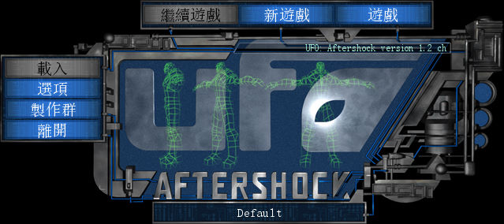
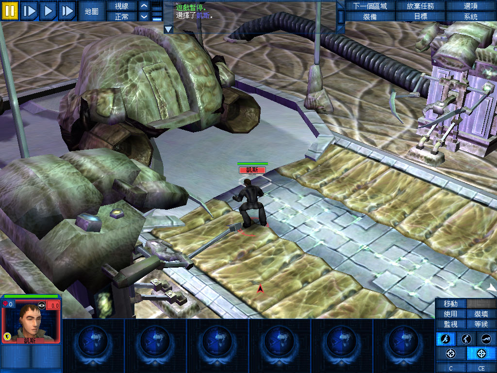
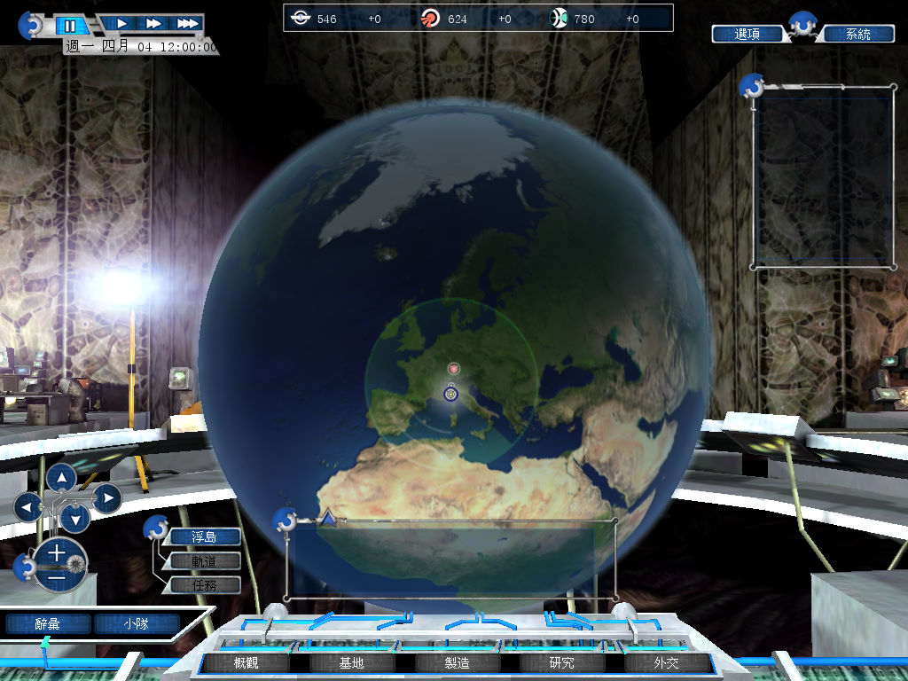

名稱：幽浮：末日過後／餘波蕩漾 (UFO: Aftershock，中文版)
簡介：Altar 2005年出品的即時戰略與回合制戰術遊戲，由1C代理發行，台灣由英特衛中文
化並代理發行 [待補]。



保護：原始版為StarForce 3.6，繁中版無保護
備註：繁中版為1.2版。
備註：虛擬機+XP無法執行，請使用Win64實機執行。
備註：ufo_aftershock_patch_1_3.rar = 非官方1.3更新檔（繁中可用）